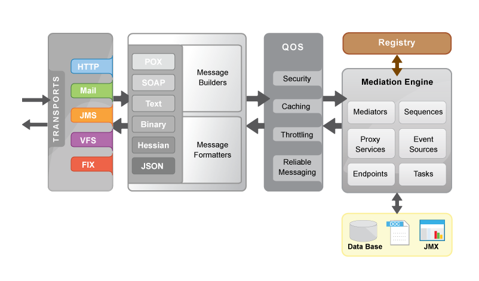

Apache Synapse Enterprise Service Bus (ESB)
Apache Synapse is a lightweight and high-performance Enterprise Service Bus (ESB).
Powered by a fast and asynchronous mediation engine, Apache Synapse provides
exceptional support for XML, Web Services and REST. In addition to XML and SOAP,
Apache Synapse supports several other content interchange formats, such as plain
text, binary, Hessian and JSON. The wide range of transport adapters available for
Synapse, enables it to communicate over many application and transport layer
protocols. As of now, Apache Synapse supports HTTP/S, Mail (POP3, IMAP, SMTP),
JMS, TCP, UDP, VFS, SMS, XMPP and FIX.
Apache Synapse is free and open source software distributed under the
Apache Software License 2.0.
The latest version of Synaspe is v2.1.
This release comes with a horde of new features, bug fixes, performance and
stability improvements.
Apache Synapse, Synapse, Apache, the Apache feather logo, and the Apache Synapse
project logo are trademarks of The Apache Software
Foundation
New in Version 2.1
-
Support for creating and managing REST APIs with URL patterns and URI templates
-
Define sequences and endpoints as templates and reuse seamlessly across the
whole configuration
-
Payload factory mediator for constructing custom XML payloads
-
Recipient list endpoint
-
HTTPD like access logging capability in the NHTTP transport
-
Message stores and message processors for implementing complex integration
patterns and advanced messaging scenarios
-
Receiving sequence support in the send mediator to make service chaining
easier
-
Conditional router mediator for implementing complex routing scenarios with
many conditions and rules
Key Features
- Proxy services - facilitating transport, interface (WSDL/Schema/Policy),
message format (SOAP 1.1/1.2, POX/REST, Text, Binary), QoS (WS-Addressing/
WS-Security/WS-RM) and optimization switching (MTOM/SwA)
- Non-blocking HTTP/S transports for fast HTTP interactions and support for
thousands of concurrent connections
- VFS transport for file manipulation and interaction with FTP, SFTP, CIFS
and WEBDAV
- JMS support for binary, plain text, XML and SOAP payloads
- Mail transport with extensive support for POP3, IMAP and SMTP
- Support for industry driven Financial
Information eXchange (FIX) protocol
- Built-in Registry/Repository, facilitating dynamic reloading of the
configuration and associated resources (e.g. XSLTs, XSD, JS, ..)
- Built-in support for scheduling tasks using the
Quartz scheduler
- Load-balancing (with or without sticky sessions) and fail-over routing
- Support for many Web Services standards including WS-Addressing, WS-Security
and WS-Reliable Messaging
- Policy based message throttling and caching (with special support for clustered
environments)
- Message splitting and aggregation
- Database lookup and update support with database connection pooling
- Fine grained statistics collection over sequences, endpoints and proxy services
- JMX monitoring and management
- Easily extendable with Java, Spring, or BSF Scripting languages (Javascript,
Ruby, Groovy, etc.)
High Level Architecture
Apache Synapse is designed to be lightweight and fast. The non-blocking HTTP
transport, the multi-threaded mediation engine and the streaming XML infoset combine
to ensure that Synapse can mediate very high volumes of messages through the service
bus with minimum delay and resource usage. Synapse also comes with comprehensive
logging capabilities, statistics collection and JMX monitoring support which are
crucial in production deployments.

Synapse uses Apache Axis2 as the underlying Web Services engine. Therefore it
has outstanding support for Web Services and related standards such as SOAP and
WSDL. Tried and tested Axis2 modules like Apache Rampart and Apache Sandesha2 can be
used with Synapse with no configuration overhead. Using such external modules,
Apache Synapse supports a range of Web Services standards including WS-Security and
WS-Reliable Messaging. Synapse also makes use of the Axis2 clustering framework to
provide enterprise grade clustering support.
Synapse is configured using a simple, XML-based configuration language. The
configuration language and the related functional components are designed with SOA
best practices in mind. It is trivial to store configuration fragments in an external
SOA registry and import them to the mediation engine on demand. Synapse ships with a
large collection of mediators that can be used to implement even the most complex
enterprise integration scenarios. If necessary, the mediation engine can be extended
by developing custom mediators using Java or your favorite scripting language.